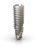
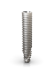
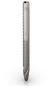
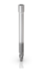

Função imediata, resultando em tempos de tratamento mais
curtos
Diferentes técnicas de instalação de implantes para evitar
o procedimento de enxerto(12)
Design otimizado de implante para obter alta estabilidade
primária em todos os tipos de ossos(13).
Estética natural imediata com opções de restauração
versáteis
Ampla gama de alturas gengivais para diferentes
necessidades clínicas
Opções de componentes retos e angulados (0º, 17°, 30°,
45°, 52º & 60º)
Tranquilidade imediata graças a uma base estável
Uma única plataforma, independente do diâmetro
Interface exclusiva, combinada com Platform Switching Cone
Morse e indexação interna
Soluções para todas as necessidades clínicas
O Sistema de Implantes Neodent® oferece soluções desenvolvidas para
tratamentos imediatos e previsíveis em todos os tipos de densidade
óssea, mesmo com diferentes graus de reabsorção do osso alveolar

Helix GM®

Helix GM® Long

Zygoma-S GM

Zygoma GM™
Reabsorção Óssea
Dr. JOE BHAT, Reino Unido
‘‘NeoArch transformou minhas reconstruções de arco completo em minha
prática. A quantidade de estabilidade primária que eu acho nos
implantes GM é incomparável.’’